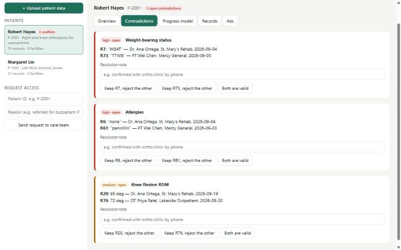
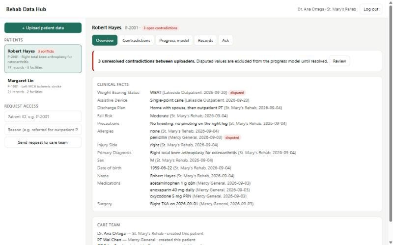

01 · System overview
At a Glance
Intake
Accepts JSON, CSV or free-text clinical notes. Values like "Berg 41/56" or "TTWB" are pulled from notes, units are converted, and impossible values are rejected.
Contradictions
Compares each upload only against other clinicians' records: allergies, weight-bearing orders, DOB, and same-day measurements outside clinical tolerances.
Recovery model
For each metric it fits linear and log recovery curves to one patient's undisputed data, picks the better one by leave-one-out error, and forecasts when goals will be reached.
Q&A
Every statement cites a record ID. If the answer isn't in the records, it says so. Disputed values are flagged, and other patients' data can never reach the answer.
02 · Contradictions
Catching Handoff Errors
The demo patient has three real-world-style conflicts: one hospital says "no known allergies" and another lists penicillin; weight-bearing is "as tolerated" in one record and "toe-touch" in another; and two knee-flexion readings disagree by 23°. Disputed records are left out of the model until a clinician keeps one or marks both valid.


03 · Safety
Guardrails & Access
- Care teams: only a patient's team can see or add to their record. Uploads from outside the team are held until a different team member approves access.
- Audit log: every login, view, upload, question and resolution is recorded.
- Prompt-injection defense: notes that try to instruct the software are flagged before any AI model sees them, and the model is told to treat notes as data.
- Offline mode: a local engine answers questions without sending any data out.
I also wrote a product assessment of the idea. The strongest angle is "rehab handoff reconciliation": catching contradictions between organizations, which few products focus on.
This is a prototype, not a certified medical system. All patients shown are fictional demo data.